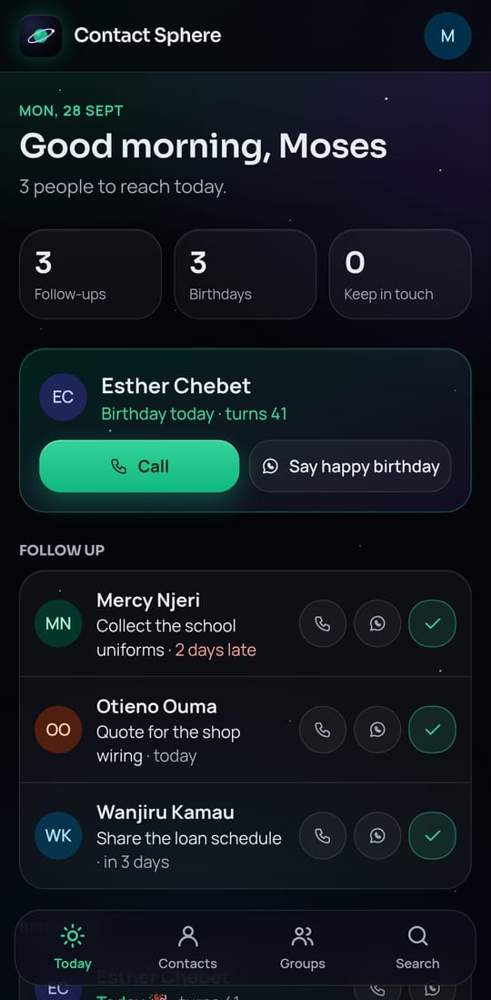
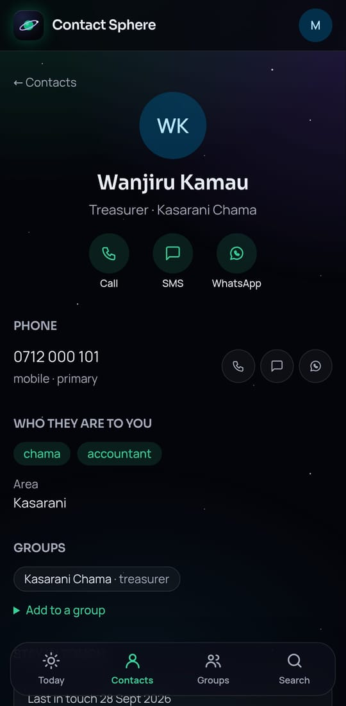
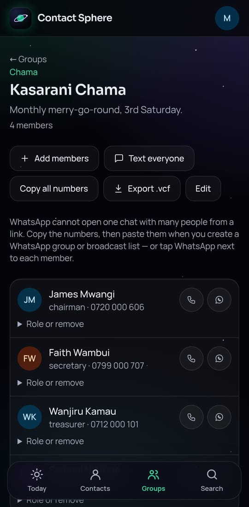
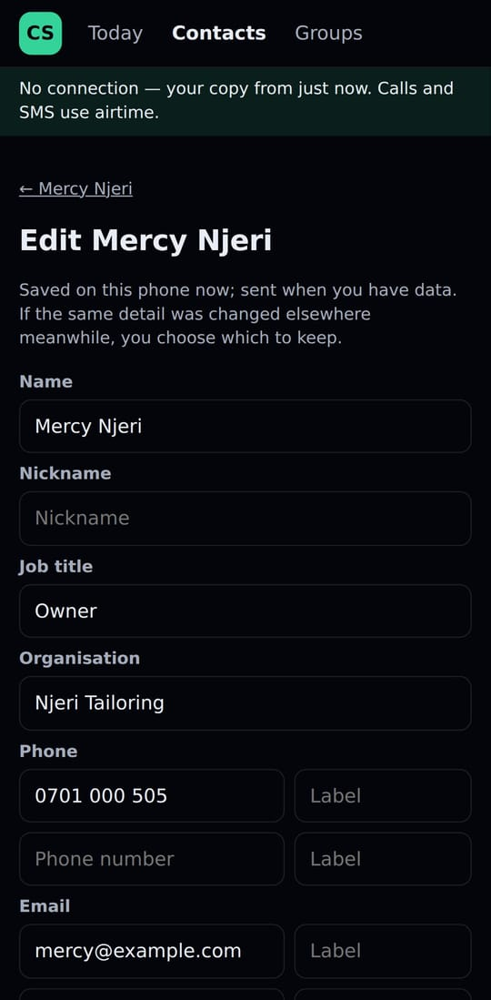
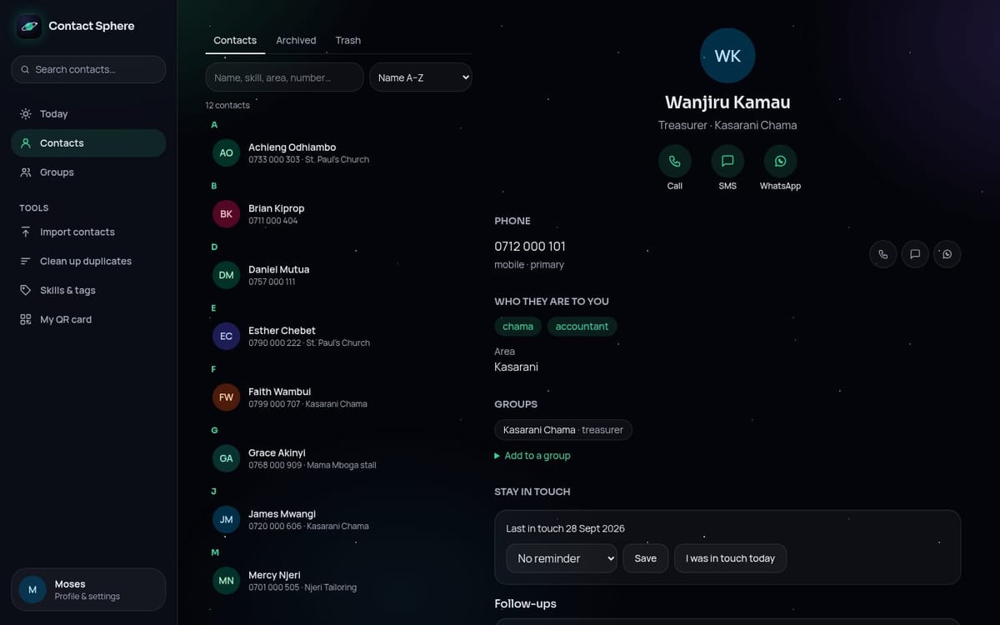

A Kenya-first contacts app for the people who hold a community together — chama officials, church administrators, small business owners. It remembers birthdays, follow-ups and who you haven't called in a while, and it keeps working when the data bundle runs out.
Screenshots use made-up demo contacts — never real people.





A chama treasurer, a church youth leader or a fundi keeps hundreds of numbers in their phone. The phone knows names and numbers, but not who is the treasurer, whose birthday is Friday, who promised a quote, or who you haven't spoken to in three months. Existing contact apps either stop there, or pay for themselves by selling that address book.
The constraints were Kenyan ones: people move between bundles and no data, Kiswahili is as natural as English, group messages go through WhatsApp or SMS, and the people in an address book never agreed to be in anyone's database.
Key decisionsWhen the owner switches it on, the phone keeps a copy of their contacts, groups and Today screen. With no connection, a small offline app opens instead of an error: you can search, call, SMS, add contacts, mark follow-ups done — and edit details. Changes wait in a queue and are sent in order when the phone is back online.
Editing offline raises the hard question: what if the same contact was changed on a
laptop meanwhile? Instead of "last save wins", each change records what the phone
showed before the edit. On reconnect the server merges field by field:
fields nobody else touched take your edit; a field changed in both places keeps the
newer value and shows you both, with Use mine or Keep this. The API
refuses any save based on an out-of-date copy (If-Match → 412), so an old
phone can never silently overwrite newer data.
The Next.js web server is the only caller of the NestJS API, with a shared secret on every request. The session token lives in an HttpOnly cookie the page's JavaScript cannot read, and every page is served with a strict, per-request Content Security Policy.
The app connects as a least-privilege role. Every row carries its owner, enforced by composite foreign keys; CHECK constraints reject impossible data; and the audit log is append-only at the grant level — the application itself cannot edit or delete history. The audit log records ids only, never names or numbers.
Every string exists in English and Kiswahili, side by side, checked by TypeScript and a test that also verifies placeholders match. The choice is remembered on the account so reminders sent from the server arrive in the owner's language too.
Every change goes through the same routine: a pull request; all checks green (format, lint, types, unit, database and end-to-end tests, a build exactly as Vercel builds it, and a dependency audit); database migrations applied to staging and then production, with a drift check, before the code is merged; then both API services are redeployed and the live app is verified — with writes on staging, read-only on production.
Significant choices are written down as architecture decision records (16 so far), from authentication and deletion policy to offline conflicts and logging. The threat model is kept current, and a session log records what actually shipped, including what went wrong and how it was fixed.
StackNext.js (App Router) on Vercel · NestJS on Render · PostgreSQL on Neon with Prisma · TypeScript throughout · Tailwind CSS · a service worker and IndexedDB for the offline app · Web Push and email (Resend) for reminders · Vitest, Jest and Playwright for tests.
What's nextRegistering with Kenya's Office of the Data Protection Commissioner, a published privacy policy and terms, account deletion, open sign-up with phone-number verification, and M-Pesa billing — the commercial gate before Contact Sphere is offered to chamas and churches beyond its first owner.